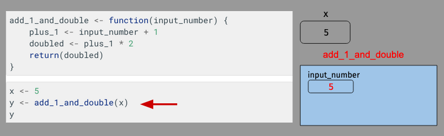
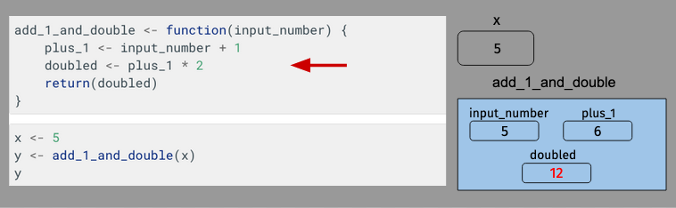
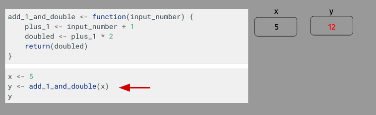

Functions
Contents
Functions#
Up to this point in our course, we’ve mostly used functions without really thinking about how they work. And to some degree, that’s by design – as discussed in our earlier reading, you don’t actually need to know what’s going on inside the function. You only need to know the arguments you need to pass to it to get back the thing that you want. In that sense, function is kind of like a toaster: you put bread in, you get toast back; how the toaster is turning the bread into toast isn’t really something you need to worry about.
But in your career, you will often find it useful to write your own functions, and to do that we have to understand a little more about how functions work.
Why do we care about writing functions? Functions are useful when you want to execute a task over and over again, resulting in less verbose and more easily interpretable code. And as we learned in our defensive programming reading, that will not only save you time, but it will also make it less likely that you will end up with errors in your code!
But wait… isn’t that what you told me loops were for?
Yes! Both loops and functions are, broadly speaking, for the same purpose: helping write more succinct code when you’re doing something similar over and over. The big difference is that with a loop you only really get one variable the changes with each pass, whereas with the function, you can generalize behavior a lot more. In addition, as you’ll see, functions are a little more flexible and reusable than loops.
Defining a Function#
To illustrate how function works, let’s begin with a very simple function that takes a number, adds one to that number, then doubles it. It is admittedly a bit of a contrived example, but it has just enough complexity to be interesting.
We would write this function as follows:
add_1_and_double <- function(input_number) {
plus_1 <- input_number + 1
doubled <- plus_1 * 2
return(doubled)
}
x <- 5
y <- add_1_and_double(x)
y
Let’s walk through this line by line to understand what’s going on.
The first thing we see – the name to which the function is being assigned – will become the function name.
Text between the parentheses after function (here, input_number) are the arguments the function will accept. We are writing this function to only accept one argument, so we’ve only put one thing between the parentheses. This is called the function signature.
Then between the curly brackets is the actual function – the argument passed to the function is referred to by whatever you called the argument in the function signature (here, input_number). So here within the function we had one to the input, double that value.
Finally, we passed that doubled value to the return() function, which means that we want the value assigned to doubled to be what the function returns.
What Happens When a Function is Called#
Now that we’ve seen how to write a function, let’s pause for a moment to work through exactly what happens when that function is called. For example, above we ran the code above_1_and_double(x) and got back 12. How did that happen? Well…
We begin with a simple assignment of 5 to x:

After which, we pass x to our function add_1_and_double(). When that happens, a new “stack frame” is created by R to execute that function, and the value passed to the function – 5 – is assigned to a variable with the name it was given in the function signature.

The function then begins to execute. When input_number is added to 1, a new variable – plus_1 – is created within the function frame.

Then plus_1 is doubled, and that value is assigned to doubled:

But then things get interesting, as we arrive at the return statement:

The return statement tells R that the function is done. When R encounters a return statement, it does two things: it (a) returns the value given to return(), and (b) it ends the function and deletes the function’s frame:

Notice that all the variables that had been defined within the frame add_1_and_double (input_number, plus_1, and doubled) are gone – when a function ends, none of the variables defined within the function live on. All that’s left is that the function’s memory lives on through its return value, which is now stored in y.
Function Arguments#
In the example above, our function accepted a single argument, but of course we’ve seen functions can accept more than one argument! To accept more than one argument, just recommended the function signature in the first line:
add_two_numbers <- function(number1, number2) {
sum <- number1 + number2
return(sum)
}
add_two_numbers(1, 2)
You can also set default values for arguments by writing my_argument="default value" in the function signature. If an argument has a default value, it becomes an optional keyword argument that users may specify, but don’t have to:
add_two_numbers <- function(number1, number2, return_as_character=FALSE) {
sum <- number1 + number2
# If return_as_character is TRUE, then sum will be returned as a character
if (return_as_character == TRUE) {
sum <- as.character(sum)
}
return(sum)
}
add_two_numbers(1, 2)
add_two_numbers(1, 2, return_as_character = TRUE)
A Note About Scope#
There’s a concept in programming called “scope”, which refers to what variables are visible at a given moment of execution. If you write a function to only need to work with (a) the arguments given to the function, and (b) the variables that you define within the function, you don’t need to worry about scope. And indeed, there’s a whole philosophy of programming – called functional programming – that says that’s the only way you should write a function.
In general, I would recommend sticking to this approach. However, I would not be doing my duty as an instructor if I did not mention that functions can see variables that exist outside of themselves. For example, in our add_1_and_double() example above, if we’d added the line doubled <- doubled + x right above our return statement, the function would have been able to “see” that there was a variable x in the world outside the function, and that it had been assigned the value 5 and increment doubled by 5. But… That’s a very dangerous method of programming, because if you write a function that way, the behavior of the function now depends on the values assigned to variables outside the function. So add_1_and_double(5) would return one thing if you had earlier defined x <- 2 and something different if you defined x <- 7. So… don’t do it? I just want to warn you that code written like that will run, but it’s something you won’t want to use unless you really know what you’re doing.
Exercises for Now#
If you want to try out some functions, try the following, or you can just skip ahead to the next reading detailed below.
Write a function called second_largest that finds the second largest value in a vector of numeric values. That is, the input should be a numeric vector and the output should be the second largest value in the vector. You can assume that the input vector has at least two values. Test your function on the following two vectors:
v1 <- 1:10
v2 <- c(15, 1000, 2, 3, 8)
Modify the second_largest function so that it accounts for two special cases: (1) when the user inputs a numeric vector with only one value, the function should return the message “Invalid input: at least two values required”; (2) when the user inputs a vector that is not numeric, the function should return the message “Invalid input: only numeric vectors accepted”. Test your new function on the following vectors:
v1 <- 1:10
v2 <- 2
v3 <- c("banana", "apple", "orange")
v4 <- as.factor(1:10)
Next Steps#
We have an example of using functions for a real task!.